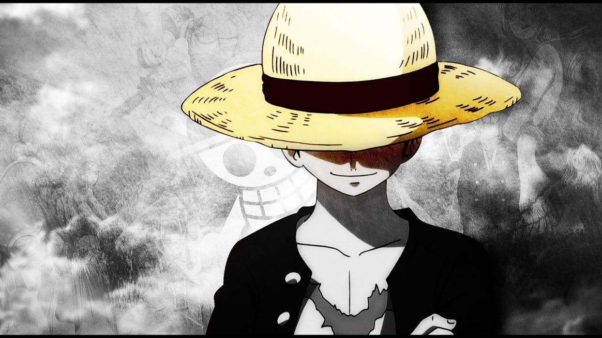

BACK
Adventure Anime
1. Naruto Kishimoto:
About:
Naruto is a shonen based manga and anime. Masashi Kishimoto wrote and illustrated the manga. Shueisha published Naruto two-shot manga first in 1995. The writer got the Hop Step Award for his masterpiece of this manga in 1997. Viz Media licensed the manga to release in North America.
Plot:
The story starts in a ninja world where a nine tails fox attacked a village. The name of the village is Konoha. The fourth Hokage seals the nine fox inside a boy whose name is Naruto Uzumaki. As the boy grows, people around him used to hate him. Just because he has a monster fox inside him. He feels lonely all time. To grab people's attention, he used to pull pranks by doing paint on the great stone faces of previous Hokage's.
 The boy's dream is to become Hokage. As he is a ninja, he is given missions to do along with his squad. The other members of the squad are Sakura Haruno, Sasuke Uchiha, and their mentor Kakashi Hatake Kakashi is a great high-level ninja and greatly feared by other villages. As he completed missions, he comes closer to become a good ninja.
The boy's dream is to become Hokage. As he is a ninja, he is given missions to do along with his squad. The other members of the squad are Sakura Haruno, Sasuke Uchiha, and their mentor Kakashi Hatake Kakashi is a great high-level ninja and greatly feared by other villages. As he completed missions, he comes closer to become a good ninja.
IF YOU WANNA DOWNLOAD "NARUTO KISHIMOTO"
CLICK HERE
2. One Piece:
About:
One Piece is a pretty popular anime. As I mentioned earlier, it is based on it's manga named 'One Piece'. The genre of the manga is Shounen. Elichiro Oda wrote and illustrated the manga. The manga is still ongoing. The production of the manga started on 22nd July, 1997. The manga already reached 99 volumes till the time I'm writing the post. Soon it will be over 100 for sure.

Plot:
One Piece is a story about Monkey D. Luffy, who wants to become a sea-robber. In a world mystical, there has a mystical fruit whom eat will have a special power but also have the greatest weakness. Monkey ate Gum-Gum Fruit which gave him a strange power but he can NEVER swim. And this weakness made his dream become a sea-robber to find ultimate treasure is difficult. One Piece is a story about Monkey D. Luffy, who wants to become a sea-robber.
In a world mystical, there is a mystical fruit whose eat will have a special power but also have the greatest weakness. Monkey ate Gum Fruit which gave him a strange power but he can never swim. And this weakness made his dream become a sea-robber to find ultimate treasure is difficult. But along his way, he meets himself many members to help. Together, they sail the Seven Seas of adventure in search of the elusive treasure "One Piece".
IF YOU WANNA DOWNLOAD "ONE PIECE SEASON 1"
CLICK HERE